IfcRoofTypeEnum
Definition from IAI: This enumeration defines the basic
configuration of the roof in terms of the different roof shapes. Roofs which are subdivided into more than these basic shapes have to be
defined by the geometry only. Also roofs with non-regular shapes ( free form
roof ) have to be defined by the geometry only. The type of such roofs is
OTHEROPERATION. Illustration 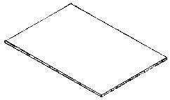 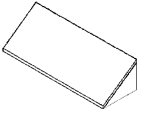 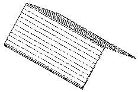 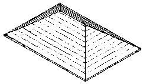 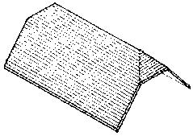 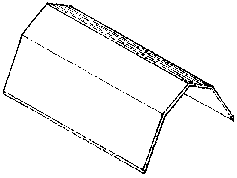 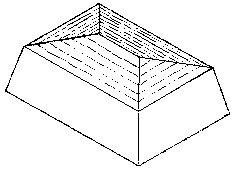 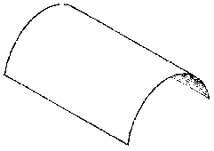 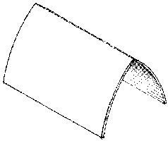 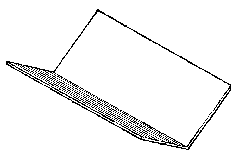 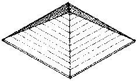 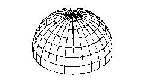 NOTEHISTORY New Enumeration in IFC
Release 2.0, Documentation and enumerators improved in IFC Release 2x
ISSUE
See issue and change log for changes made in IFC Release
2x.
Enumerator
Description
Figure
FLAT_ROOF
A roof having no slope, or
one with only a slight pitch so as to drain rainwater.
SHED_ROOF
A roof having a single
slope.
GABLE_ROOF
A roof sloping downward in
two parts from a central ridge, so as to form a gable at each end.
HIP_ROOF
A roof having sloping ends
and sides meeting at an inclined projecting angle.
HIPPED_GABLE_ROOF
A roof having a hipped end
truncating a gable.
GAMBREL_ROOF
A ridged roof divided on each
side into a shallower slope above a steeper one.
MANSARD_ROOF
A roof having on each side a
steeper lower part and a shallower upper part.
BARREL_ROOF
A roof or ceiling having a
semicylindrical form.
RAINBOW_ROOF
A gable roof in the form of a
broad Gothic arch, with gently sloping convex surfaces.
BUTTERFLY_ROOF
A roof having two slopes,
each descending inward from the eaves.
PAVILION_ROOF
A pyramidal hip roof.
DOME_ROOF
A hemispherical hip
roof.
FREEFORM
Free form roof
NOTDEFINED
No specification given
EXPRESS specification:
|
| Name | Type | Referred through | Express-G | |
| IfcRoof | Entity |
|
Diagram 2 |